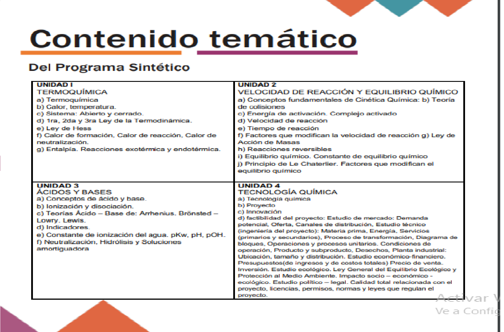

Consulta el temario aquí!
Objetivo de la Unidad de Aprendizaje:
Realizar experiencias de laboratorio que permitan fomentar en el
alumno una actitud de colaboración, observadora, interrogante,
analítica y crítica, en su formación, capacitación, e interés al analizar
su entorno con vivencias personales que deben tener un soporte
teórico, para llegar a una explicación del fenómeno, al ser la química
una ciencia experimental y tecnología.
Consulta el sig. vídeo!
Director del plantel: José Diego Rubén Águila Chávez
Presidenta de academia: Marina Hernández Muñoz
Ubicación en el plantel: Edificio de computación (Doble L), último piso del lado del mural del "Cuervo"
Descripción: Aprende a cocinar meta como Jesse Pinkman, digo, aprende de química IV que ni la tabla periódica sabes!